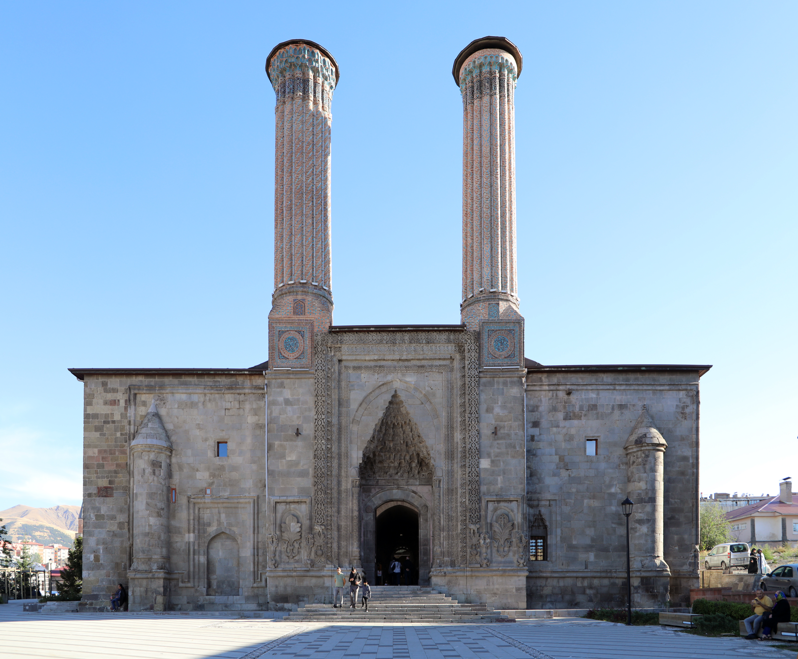
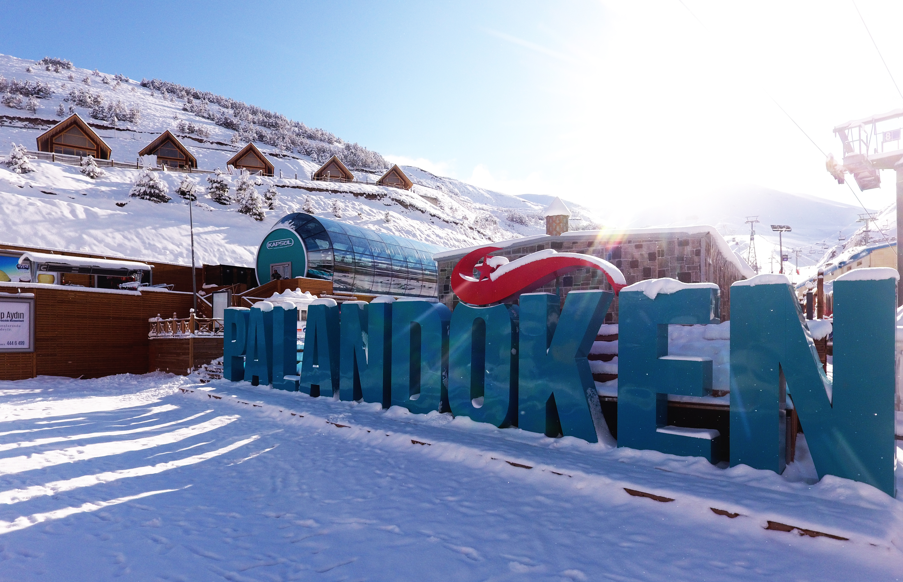
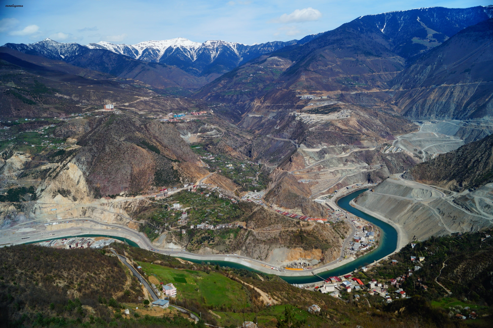
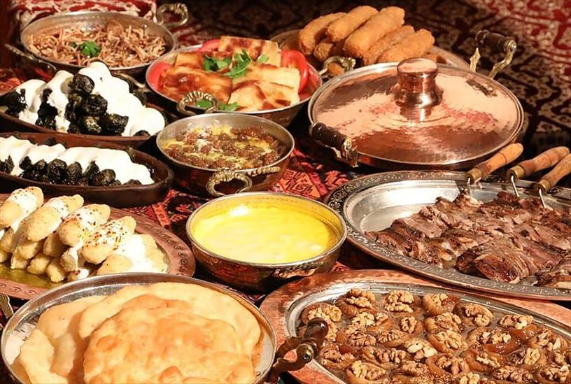
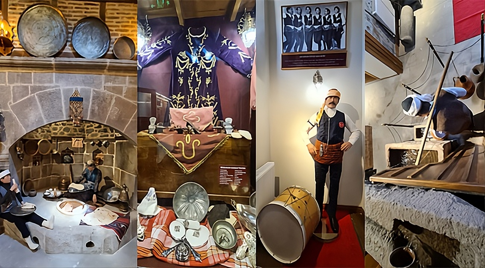

ERZURUM
Doğu'nun Zirvesi

Tarihi Dokusu
Erzurum, binlerce yıllık geçmişiyle pek çok medeniyetin izlerini taşıyan köklü bir şehirdir.

Kış Turizmi
Erzurum, Palandöken ve Konaklı gibi merkezleriyle Türkiye'nin kış turizmi başkentidir.

Eşsiz Doğası
Volkanik oluşumlardan şelalelere kadar geniş bir doğa yelpazesine sahiptir.

Yöresel Yemek ve Tatlıları
Erzurum mutfağı, özellikle kuzu etine dayalı yemekleri, doyurucu çorbaları ve şerbetli tatlılarıyla Türkiye'nin en zengin yöresel mutfaklarından biridir.

Yöresel Kültürü
Erzurum, köklü tarihi ve sert ikliminin şekillendirdiği, "Dadaşlık" ruhunun hakim olduğu çok zengin bir yöresel kültüre sahiptir. Bu kültür; kendine has mutfağı, halk oyunları, el sanatları ve sosyal gelenekleriyle Türkiye'nin en karakteristik kimliklerinden birini oluşturur.
Nüfus
767.848
Rakım
1.890 m
Yüzölçümü
25.355 km²
Plaka
25
Tarihi Mekanlar
Kadim medeniyetlerin taşlara kazınmış izleri:
Doğal Harikalar
Doğanın Erzurum'a bahşettiği eşsiz manzaralar:
Lezzet Durakları
Damaklarda iz bırakan geleneksel lezzetler:
İlçeler ve Değerler
20 ilçe ve şehre ruhunu veren kültürel değerler: